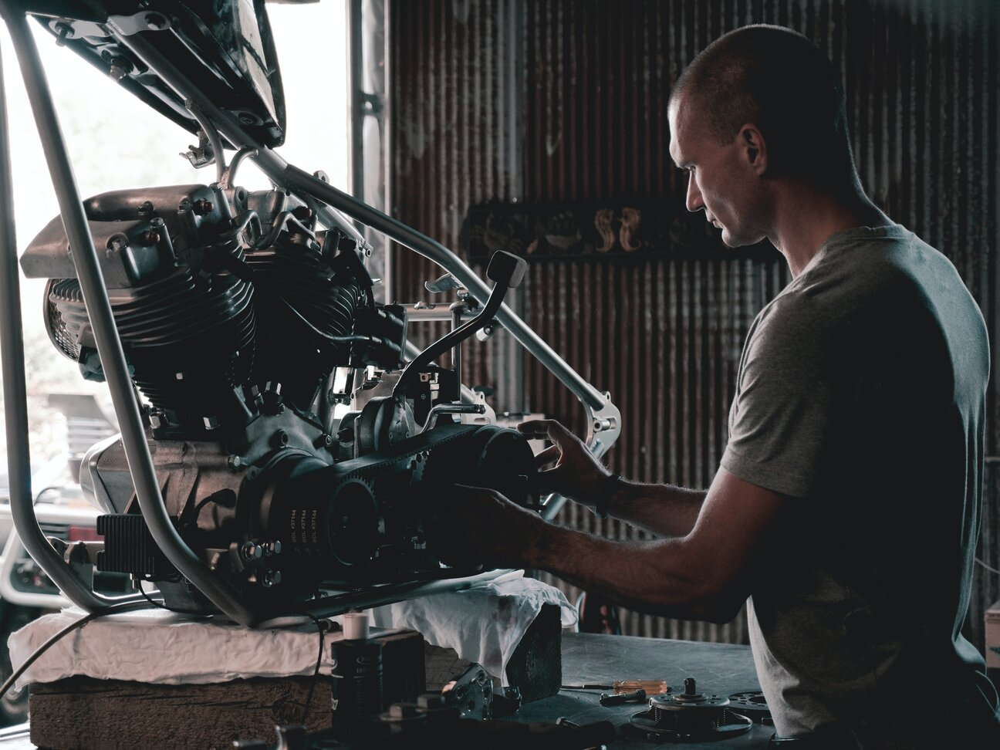
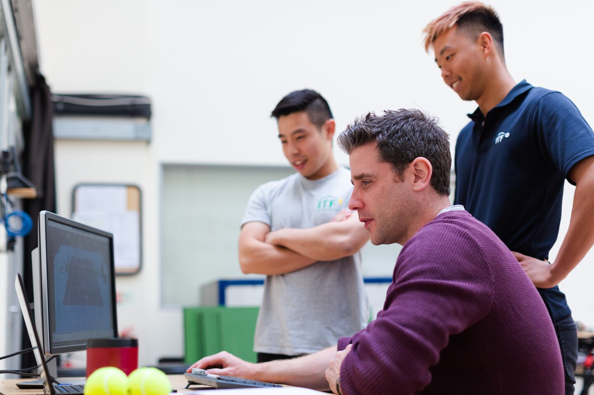

Professional Mechanics
In everything that we need to be done, we are always looking for the advised of professionals. In home, educational, health and mostly everything, we seek for professionals. Here in retro motorbikes, we have a team of professional mechanic who will tend to your desired motorbikes. We want the best for our clients that is why we are also using the latest technology available. Our mechanics here uses computerize diagnostics tools to run test, because we believe that incorporating our products with technology would make it handy and one of the best.
Innovation Through Study and Technology
We also believe that there is always a room for improvement. Every day in the shop, regardless of one’s job or position, is an opportunity to learn and help improve the shop’s operations. Improvement leads to better staff morale, better customer relations, and better shop profitability. But, improvement requires training that can help augment shop practices and keep you up-to-date on new tools, techniques and methods for your shop. And, with the rise in hybrid and electric vehicles, training is necessary for keeping pace with industry changes and advancements. The automotive industry sees changes at a dizzying pace. New technology brings both exciting and challenging opportunities to veteran technicians, that is why we keep on learning.
